AutoKitchen — eight ways to prepare a meal automatically
This page shows the eight candidate concepts K1…K8 for the meal-preparation part of
AutoKitchen: the part that takes ingredients out of their storage boxes, washes, peels, cuts, mixes, forms,
cooks, flips and hands over the food, and then cleans itself. In the exploration round P3 each concept was
worked out by its own advocate in a separate document. Afterwards five critics each looked at all eight
from one viewpoint: C1 meal coverage and food result, C2 hygiene,
C3 mechanics and reliability, C4 fit into the whole machine, and
C5 simplicity. (The critique files call themselves round P4.) Round P5 then combined the
best parts into one machine, K9 EINHAND, shown at the end of the page.
Diagrams: the first picture of each concept shows the front view (as seen from the
kitchen, door removed) on the left and the top view on the right, to the same scale. The second
picture is a set of animated close-ups of the concept's key mechanisms. All animations loop.
Scores: every available critique scores each concept from 1 to 10, higher is
better, with half points. C2 defines 10 as "would pass a hygienic-design audit as drawn",
5 as "passes only after several major fixes" and 1 as "cannot pass without abandoning the concept".
C4 defines 10 as "fits the width, power, water, cost and transport budgets and runs a household's day
without help" and 1 as "cannot be made to fit without abandoning the concept". C1 and C3 use the same
1–10 range without written anchors. The scores are not comparable between critics; read each column on
its own.
C5 (simplicity) scores 1–10 on an absolute scale: 10 is what a deliberately simple
machine would need, 1 the level at which complexity alone makes the machine unmanageable (counts of
actuators, seals, novel mechanisms, events per meal, cleaning points and more, weighted). No concept
reaches 6; C5's simple reference sketch scores 7.1.
Paper only: nothing was built or tested. Every number on this page (widths, costs,
coverage, scores) is a paper estimate. Some requirements changed after the concepts were written (the
machine must now wash, peel and cut all fresh produce itself; a regular household is 2 persons and a
meal serves at most 4; the whole machine must fit 3.6 m of wall). The critics judged against the new
state, which is why their figures are often lower than the concept documents' own claims.
Scale 1–10, higher is better. Cell colours are only a reading aid: red 3 or less, yellow
3.5–5, green 5.5 or more.
What the critics found for all eight
No concept reaches the target of 95 % of traditional meals. Under the new rule that the machine
prepares all fresh produce itself, C1 puts the ceiling at about 93 % for every concept, because some
dishes need ready dough or fiddly folded wrappers.
No concept meets the water and energy budget per meal once dish washing and produce washing are
counted (C2, C4).
Re-estimated realistically, every preparation cell alone costs 24–45 k€, as much as or more than the
25 k€ budget for the whole machine, and only K8 fits the wall width that C3 sets aside for the
preparation cell (K2 nearly).
K1 — Ceiling turret cell
The generalist: a stainless wash-down cell whose sealed ceiling carries turrets with one
plain rod each; every utensil is a simple passive steel part that the rods pick up.
Overview: front view left, top view right.
Mechanism close-ups.
How it works
Picture a stainless steel box 1.65 m wide whose ceiling carries three motorised turntables ("turrets").
Through each turret one round steel rod hangs down; by turning two discs, sliding and twisting, the rod
can be placed anywhere inside a circle of 40 cm and lowered. Every utensil — knife, tongs, whisk, ladle,
turner, fork — is a plain steel part that the rod clicks onto; motors, bearings and valves all stay in
a dry room above the ceiling. Food lies on a rotating cutting board, on trays or in pots. The rods cut
on the board; a fixed 3 kN press at the back wall pushes potatoes through a dicing grid; a "roll head"
carried by a rod tilts pots to pour and turns a pair of pans over to flip a pancake. Four induction
hobs and a sideways combi-steam oven are inside the cell, so the same hands stir and flip. Afterwards
all utensils and vessels go to a dishwasher, and the rods carry a water-jet lance along a programmed
path to hose the cell down. Key numbers: 2.27 m of wall including the oven, 17 motor axes, about 110
loose parts, parts cost about 27.5 k€ in the concept document (C3 re-estimates 40–45 k€). The explorer
estimates 90–95 % meal coverage; C1's normalised figure is 90.7 % (92.7 % with extra add-on
modules).
Pros
The most versatile concept: every test meal has a path, and a missing operation only needs one more
passive steel part.
Best food result with K6 (C1): correct gravy sequence, core thermometer for steak and roasts,
cucumbers peeled, peppers cored and beans trimmed in the cell.
When the door is opened all rods retract into the ceiling, so nothing moves in the open cell
(C3: the safest jam clearing).
The hands could also put the food on plates (C4).
Plain round rods are the simplest way to bring motion into a wet cell, and they are stiff
enough (C3).
Cons
Each rod reaches only a 40 cm circle and never meets its neighbour, so food must be relayed:
110–280 handling moves per meal (mean 175), slow, and slower still for 6 persons.
7.3 m of rotating ceiling seams above open food. C2 calls this the only fatal hygiene finding of
all eight: no sensor can see inside the gaps, and there is no fallback within the concept.
Widest and most expensive cell; C4 finds water and energy at about twice the budget, and
everything is clean only about 3 hours after the meal.
C3 found two drawing errors (both fixable): the four hob positions under one turret collide, and
the press hangs on two pegs welded to a 2 mm sheet.
About 110 loose parts and about 38 separate skills to program.
Each turret is a 30–40 kg service unit mounted 1.4–2 m high.
Scores
C1 coverage / food
C2 hygiene
C3 mechanics
C4 system fit
C5 simplicity
7
3
3
2
3.1
K2 — Vessel stack and inversion
No shaft ever passes through a wall that touches food, and food is never poured through
open air: it is worked inside closed stacks of round-rimmed vessels, and every transfer or flip is a
rim-to-rim inversion.
Overview: front view left, top view right.
Mechanism close-ups.
How it works
All pots, cans and rings share one round rim, so they can be stacked on top of each other into a closed
tower. One carriage (the "Wender", German for "turner") runs up and down a central shaft; it grips
vessels by their neck, can turn them upside down, and carries them between a ware rack and a washer on
the left and stacked hob levels and the oven on the right. Cutting happens inside a closed stack on the
lowest hob: a 5 kN press from above pushes potatoes through a dicing grid or a ricer straight into the
pot below, and the same spindle whisks and kneads. To flip, drain or turn out a cake, two vessels are
clamped rim to rim and the carriage rolls them over, so the food changes vessel without being poured.
Ingredients are added to a pot that already holds food with a small tipping cradle; boxes are dosed at a
tilting "hourglass" dock by the hand-over port. Every food-contact part is simple, seal-free steel ware,
washed on a built-in "wash lathe" that spins each part past jets and then heats it briefly by
induction. Key numbers: 1.6 m wide × 2 m high including oven, washer and rack; 21 motors; 76 ware
pieces; about 24 k€ (C3: 32–37 k€). The explorer estimates 89 % coverage; C1 finds 83.9 % under the
new produce rule.
Pros
One device answers flipping, draining, turning out, tossing and enclosed breading, with no seal or
bearing in any washed part.
Dicing, ricing and mashing happen inside a closed stack: no dust and no spill.
Bare-metal ware with a single rim, washed on a lathe, is "the best ware-cleaning idea of the
eight" (C2).
The best sensing (C3): load pins in the jaws weigh every transfer and detect a badly seated stack
before the press pushes.
The most self-contained cell (C4): rack, washer and oven inside, the transport system serves only
one port; relatively few moves (about 48 per meal).
Cons
It cannot pick up and place a single piece: no deseeding peppers, peeling apples, assembling a
burger or plating. Under the new produce rule C1 rates this fatal.
Everything passes through one carriage: if it fails, everything stops, and a dropped pot needs a
human.
Hobs are stacked up to 2 m high, so hot fat is flipped at head height (C3, C4).
Turning a closed hot pair over can build up pressure and leak; the rim has no centring feature
(C3).
The induction "flash" after washing is dry heat and is not shown to disinfect (C2).
The sideways oven does not fit the depth; C4 puts the true width at about 1.9 m.
Scores
C1 coverage / food
C2 hygiene
C3 mechanics
C4 system fit
C5 simplicity
3.5
5
4.5
5
4.3
K3 — Drum and belt line
Two process machines and no robot hand: a self-cleaning tilting drum for bulk and
liquid food, and a short belt under fixed tools for flat food.
Overview: front view left, top view right.
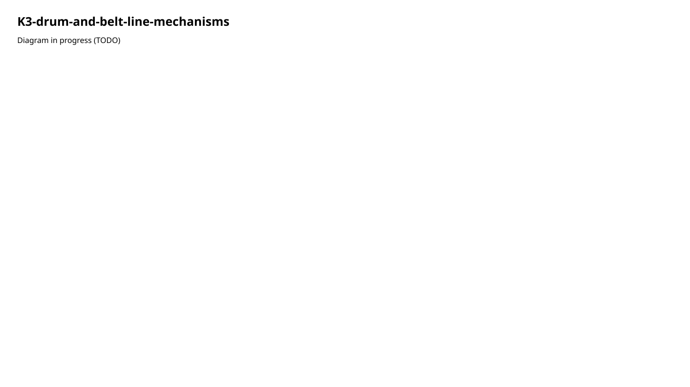
Mechanism close-ups.
How it works
A process line without a robot hand. On the left a tilting stainless drum, 30 cm across and heated by
its own induction coil, washes, peels, spins, kneads, chops, mixes and fries in bulk, and pours its
contents over its lip. On the right a 30 cm wide food belt runs under a bridge of fixed tools — a fast
guillotine at the front end ("nose"), a beam with roller, comb and blade — to slice, carve, roll out,
bread and roll up flat food; the nose slides out to pick up or drop food. A tool arm on the back wall
reaches into the drum and over the belt with knives, whisk, masher and cutter cartridges that dice,
slice or grate. A vessel lift in the central shaft carries pots between three stacked hob shelves, the
oven and the drum, pours them, and flips a pair of pans. The drum washes, disinfects and dries itself;
the belt is washed on its return run with spray and steam. Key numbers: 1.45 m wide including the oven
and five heated positions; 35 motors; about 20 k€ without the oven (C3: 29–33 k€). The explorer
estimates 92–93.5 % coverage; C1 finds 83.1 %, or 90.3 % with add-on modules on the tool arm.
Pros
The drum is a known kind of machine (tilting kettle, potato peeler, washing machine) and a credible
self-cleaning vessel (C2, C3).
Very good for bulk work: washing, peeling, kneading, stir-fry; searing mince in the drum gives the
best Bolognese of the eight (C1).
The belt carves, rolls out dough, breads cutlets and rolls Rouladen well.
The narrowest all-inclusive cell (1.45 m) with few handling moves, about 36 per meal (C4).
Pouring about the drum's own lip keeps the pour point fixed, an elegant geometry (C3).
Cons
"No manipulator" moved the complexity rather than removing it: a 5-axis vessel lift and a tool arm
bring the total to 35 motors and 19 moving seals, the most of all eight (C3).
The plastic belt is a fixed food surface used for raw meat and for ready-to-eat food; its inner
side and wash box are never seen. Fatal if its cleaning test fails (C2).
One drum is a bottleneck; the drum, the vessel lift and the dock each stop every meal if they
fail.
Food weak points (C1): no core thermometer, tumbled fried potatoes break up, Schnitzel fried in
too little fat, no corer or garlic press.
A 35 kg spinning drum is hard-mounted on the house wall (vibration, noise), and the oven does not
fit under it (C3, C4).
Scores
C1 coverage / food
C2 hygiene
C3 mechanics
C4 system fit
C5 simplicity
4.5
3.5
3.5
4.5
3.5
K4 — Shuttle mat: the membrane cell
A two-dimensional kitchen: an exchangeable mat, reeled between two bars under fixed
tools, does the food work and cleans itself by reeling through spray and steam.
Overview: front view left, top view right.Mechanism close-ups.
How it works
The kitchen is flattened to two dimensions. A 40 cm wide food-safe mat unrolls from one of five
roller-blind cassettes under a small table, and its far end is held by a bar on a two-link arm. Moving
the mat under fixed tools does the work: a blade beam chops on the mat, a roller presses and rolls out
dough, the slack mat hanging between two side walls forms a trough that tumbles, kneads or rolls up a
Roulade, and pulling the mat out from under the food drops it into a pan. Liquids never go on the mat:
they are whisked or blended at the first hob position, which has a swing-in spindle; all four hobs are
slowly turning plates, and a second arm with a magnetic shoe carries pots and pans and loads the oven
above the hobs. When a mat is wound back into its cassette it passes a wash gate with spray and steam,
so it is clean within minutes. Key numbers: 1.56 m wide; 26 motors (11 for the mat line itself); 36
loose items plus 5 mats; about 16 k€ without the oven (C3: 25–29 k€). The explorer estimates 92–94 %
coverage; C1 finds 81.5 %.
Pros
The best rolling, sheeting and wrapping of the eight: strudel, sponge roll, burritos, enchiladas
(C1).
Sticky food touches only the mat, and the mat is washed within minutes of use (C2 praises the
timing).
Only rotating shafts pass through one wall, no sliding seals; the plain mat is the best background
for the camera (C3).
Compact and cheap on paper; the householder can change a mat cassette in 2 minutes without
tools.
Cons
Nothing can be turned about the vertical or pushed straight down: no coring apples, pressing garlic,
Spätzle or stacking a burger. C1 rates this fatal for a whole kitchen.
Everything depends on dough and mince releasing from the silicone mat; the explorer writes that if
this fails, "nothing else in this document matters".
About 10 m² of fabric-cored mats are stored wound and damp between meals; the raw-meat disinfection
of the cutting mat covers only 5 % of its length (C2).
Mats wear out: about 570 € a year, against 300 € a year allowed for all wear parts together.
C3: the thin mat arm cannot keep the mat running straight (fatal as drawn), the depth has zero
margin, and the oven hangs above the hobs at head height where no person can reach it.
The hoped-for 13 motors became 26 once hobs and pot handling were included.
Scores
C1 coverage / food
C2 hygiene
C3 mechanics
C4 system fit
C5 simplicity
4
3
3.5
4.5
3.8
K5 — Ram-and-die column with piston vessels
Every shape-giving step is "push it through a die and cut it off", and food only
falls.
Overview: front view left, top view right.
Mechanism close-ups.
How it works
A storage box empties into an upright stainless tube (14 cm bore, 30 cm long) standing on a die. A loose
piston is laid on top of the food and an 8 kN ram pushes it down; a curved sickle blade cuts off whatever
comes out, and it falls straight into the pot, pan or tray below. The die and the feed per cut decide the
result: slices of any thickness, dice, sticks, mashed potato, Spätzle, patties, dumpling portions or a
dose of paste; with a capped bottom and a plunger the same tube kneads dough and mixes batter. Three
tubes sit on a turret and six dies in a carousel underneath. Beside the column a "frying book" — two
hinged pans — flips steaks and cutlets by closing and opening; two turning hob positions stir pots
against a hung scraper; a carriage behind the back wall carries vessels to the hobs and the sideways
oven. For cleaning, the piston scrapes the tube clean as it moves, tubes are rinsed like pipes and
checked by a camera looking down the bore, and dies are washed under a hood on the carousel. Key
numbers: 1.77 m wide (1.17 m without the oven); 25 motors; about 96 loose parts; 20–22 k€ (C3:
33–38 k€). The explorer estimates 89.9–92.7 % coverage; C1 finds 77.8 %.
Pros
The right principle for cutting: even slices and dice, riced mash, patties to ±5 %, accurate paste
dosing, and no dust from box to pot.
The piston-scraped tube checked by a bore camera is the best-cleaned fixed food part of all eight
(C2).
The ram's force-and-travel trace detects jams, blunt blades and bad seating (C3); the frying book
is the safest way to flip in hot fat once its drives are sized right.
Few handling moves (about 34 per meal), and the column can be built and tested separately from the
hob: the best build path (C4).
Cons
Lowest coverage in C1: whole cabbage heads do not fit the 14 cm bore, there is no blender, pizza
dough is pressed instead of stretched, dumplings come out as cylinders, cakes are dense.
Everything flat or limp needs extra equipment around the column; in total 25 motors and 96 loose
parts, so the column's simplicity does not survive in the whole cell.
C3 found three drawing errors (all fixable): the "closed" frame is open and would spring about 9 mm
at full force, the frying book is 4.4 times too weak, and the carriage collides with a frame column.
Grid dies would cost about three times the estimate.
Hygiene (C2): a shared die plate onto which mince is smeared, pistons with a soil-trapping groove,
and the waste strainer sits in the wash-water loop.
The highest in-place cleaning water on top of the dishwasher (C4); an 8 kN ram behind a household
door raises safety and noise questions.
Scores
C1 coverage / food
C2 hygiene
C3 mechanics
C4 system fit
C5 simplicity
3
5
5
5
3.9
K6 — Loose ware and fast washer (the conservative candidate)
Nothing that touches food is attached to the machine, and nothing new is asked of
physics: bought catering trays, plain steel tools, one gantry, and washing during the meal.
Overview: front view left, top view right.
Mechanism close-ups.
How it works
Food lies in bought catering trays (Gastronorm, GN) and round pots; every tool is a plain welded steel
part, and every item carries the same flat steel tab with two holes. One overhead gantry — a hanging mast
with an arm, a tilting and spinning wrist and a two-jaw gripper — picks everything up by that tab. Heavy
work does not go through the gantry: a 3 kN pull-down press with a tube and exchangeable end plates
dices, slices and rices; two turning hob positions knead and stir; potatoes are speared on a fork and
spun past a fixed peeler blade. To flip or turn out, the gripper takes two trays rim to rim and turns
them over. Instead of one washer at the end of the bay (as the catalogue described it), the worked-out
design has two small top-loading wash wells (3.5-minute cycle) in the deck: a dirty item is hung straight
in, so ware is washed while cooking goes on. The bay itself has no fixed food surface. Key numbers:
2.6 m wide including four hobs and the oven; 16 motors; 93 loose items; about 22 k€ including oven and
washer (C3: 28–31 k€). The explorer estimates 95–96 % coverage; C1 considers that overstated and finds
87.9 %, or 92.7 % with add-on modules.
Pros
Every mechanism already exists in catering or in a hardware store: the fewest physical unknowns
(C3).
Best hygiene score (C2): no fixed food surface, commercial wash hardware, every item checked by a
camera.
Everything is clean and stored 15–20 minutes after the meal, the best of the eight, with the least
water (C2, C4).
Plain household tools give traditional results; tied with K1 for the best C1 score.
The tab with pins is the best grip of the eight, and every jam can be reached through the front
door (C3).
Cons
The widest cell: 2.6 m, 72 % of the whole machine's wall (C4 rates this fatal).
100–145 grips per meal with one gripper; each must be extremely reliable, and that is not
proven.
The coverage claim of 95–96 % leaves out several meals (C1: about 94 % even by the explorer's own
standard).
A large open splash area of 10.7 m² is washed only once a day, and the gripper carries soil from
tab to tab (C2).
The wash wells are too loud (52–56 dB(A) against 48 allowed), get no power while the oven heats, and
a second washer is still needed for the dishes (C4).
C3: the mast collides with its own press bars (fixable), and a tab on a thin tray rim carries too
much load.
Scores
C1 coverage / food
C2 hygiene
C3 mechanics
C4 system fit
C5 simplicity
7
7
6
3.5
4.5
K7 — State change first: cold plate, steam, rigid handling
Change the food, not the hand: soft food is made stiff on a −25 °C plate and skins are
loosened by steam, so that a plain pick-and-place cell can handle it.
Overview: front view left, top view right.
Mechanism close-ups.
How it works
Instead of building clever hands, K7 changes the food. Soft items — a cutlet, a patty, a rolled
Roulade, a filling — are laid between thin steel trays and pressed for 1–6 minutes between −25 °C
aluminium plates in a small cold cabinet; afterwards they have a frozen crust a few millimetres deep and
behave like stiff parts that a simple gantry with a gripper can lift, dip into breading, stack and cut.
On the warm side, skins of potatoes, tomatoes and eggs are loosened by boiling or steam and slipped off in
a rubber-finger basket; frozen food is released from its tray by a 1.5-second induction pulse; pastes,
butter and herbs are kept frozen as countable pucks. Recipes are reordered where this removes a step
(for example, potatoes boiled before they are peeled). The rest is a normal kitchen: a 3 kN press with
dies, a sink well that also peels, a vibrating bow knife, four turning hobs, a sideways oven, and a slot
washer that cleans flat trays in about 70 s. Key numbers: 2.28 m wide; 24 motors; about 105 tools and
parts plus 27 pots and pans; about 32 k€ (C3: 37–41 k€). The explorer estimates 92–93 % coverage; C1
finds 87.5 %.
Pros
The physics checks out on paper: a 6 mm cutlet is stiff after 55–115 s, and a small freezer-class
compressor is enough.
The best Rouladen (pinned through the stiff roll) and fried-potato sequences of the eight, and the
cleanest cutting of raw meat (C1).
Chilled meat drips and smears less, and the steam finish is the most credible disinfection step
(C2).
Two excellent mechanisms (C3): fixed cold plates with loose cold slabs (no moving refrigerant
pipe), and an under-deck press on two rods in tension, the soundest press of all eight.
Fast chilling could be offered later as an optional add-on module (C4).
Cons
A booster, not a kitchen: everything else is still needed, so it has the most loose parts (132)
and, with K1, the highest cost (C3, C4 rates the cost fatal).
2.28 m wide, plus a second refrigeration circuit with propane in the base under the oven
(C3, C4).
Wrapping limp sheets (strudel, sponge roll, wraps) is excluded by definition.
Soft items queue for the cold plate, fried items wait too long, and the customer must accept
fresh meat frozen at the surface.
The bow knife vibrates at 45 Hz on a loose coupling: hammering, noise and wear (C3).
The open slot washer sprays raw-meat rinse water next to the clean tray rack (C2); about 120 moves
per meal.
Scores
C1 coverage / food
C2 hygiene
C3 mechanics
C4 system fit
C5 simplicity
6.5
5.5
4
2.5
3.3
K8 — Sealed tub with magnetic pucks
A dishwasher tub with no moving seal at all: magnets behind the wall drag passive pucks
inside it, and after cooking the tub washes itself and everything in it.
Overview: front view left, top view right.Mechanism close-ups.
How it works
Preparation and cooking happen in one closed stainless tub (1.1 m × 0.48 m × 0.7 m inside) built like a
dishwasher, with nothing passing through its walls. Behind the inner skin of the front door, in the dry,
a gantry moves two rings of magnets. Inside the tub two passive "pucks" (19 cm discs) cling to the door
skin opposite the magnets, follow them up, down and sideways, and turn a spindle: a knife on a puck works
as a lever knife like a paper cutter, a fork turns a potato past a peeler like a spit, a turner flips
pieces. A magnet-driven turntable and a fast spindle in the floor drive the mixing bowl and a chopper
jug. Magnets give only about 100 N, so heavy jobs (dicing, ricing) are done in screw cassettes that turn
12 Nm into about 2.5 kN of pressing force. Four induction zones lie under a glass-ceramic plate in the
tub floor; the oven stands beside the tub. After the meal the door stays shut and the tub washes itself
and every utensil, puck and pot inside it with a dishwasher programme. Key numbers: 1.75 m wide including
the oven (1.15 m for the tub alone); 16 motors; 0 moving seals; about 70 parts living in the tub; about
14 k€ without oven and dock (C3: 24–28 k€). The explorer estimates 91–93 % coverage; C1 finds 88.3 %.
Pros
Zero moving seals and no drive, cable or bearing in the food space; the whole chamber is washed
after every cooked meal, and frying fumes stay inside (C2, C3).
Fewest motors, cheapest, and the only concept inside the width set aside for it (C3); the best
system fit (C4).
Every motor can be serviced from the room behind a décor panel; the magnet coupling slips
harmlessly when overloaded and doubles as a force sensor (C3).
Lowest water and energy of the eight (C4: about 42 L and 3.1 kWh per 2-person meal, still slightly
over budget), and it washes its own pots, so the machine needs only a dish washer.
The experiments that decide the concept cost under 1000 €.
Cons
All magnet and friction figures are calculated, not measured, and the whole concept rests on
them.
No in-out (depth) axis; a puck that lets go falls into the food; heavy jobs need special
cassettes.
The tub is closed for 25–35 minutes after each meal while it washes.
Clean utensils are stored inside the soiled tub, the quick rinse does not disinfect raw-meat ware,
and dirty ware waits until the end of the meal (C2).
The 40–50 kg drive door has no permitted way to open as drawn (C3: fatal, fixable), and the wash
jets drum on the door skin that faces the room.
C1: the menus silently assumed peeled garlic and half cabbages, and rectangular pans on round coils
scorch in the corners.
Scores
C1 coverage / food
C2 hygiene
C3 mechanics
C4 system fit
C5 simplicity
6
6
6
6
5.1
K9 — EINHAND, the combined machine (one hand, one deck, one washer)
The simplicity-first combination of the best parts of K6 and K8: one gantry hand works loose
ware on household appliances, and one washer cleans both the cooking ware and the dishes.
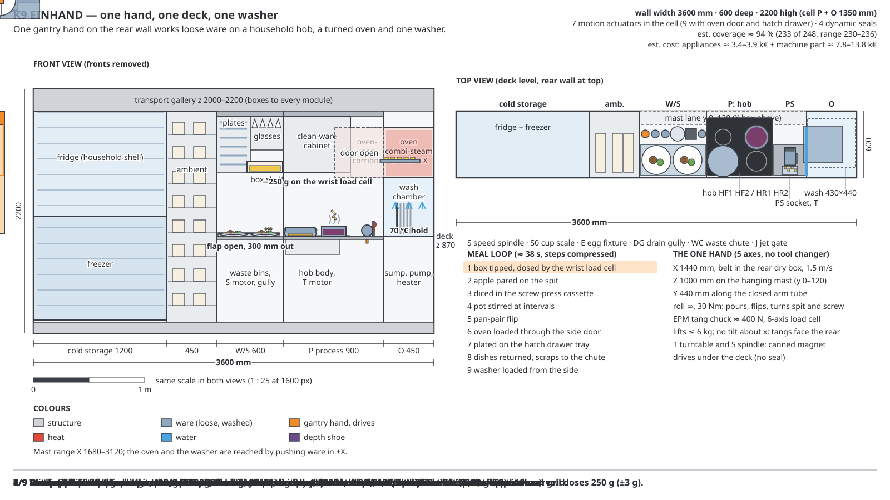
Overview: front view left, top view right, one meal in about 38 seconds.
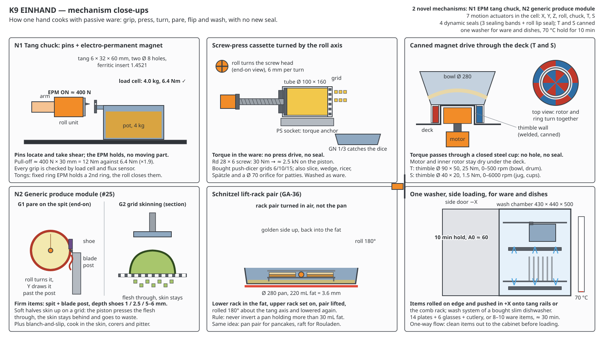
Mechanism close-ups.
How it works
A single robot hand hangs from a rail along the rear wall. It moves left and right, up and down, in and out
along a closed arm, and can turn whatever it holds about one axis. Every pot, pan, tray, knife and tool has
the same small steel tab (the "tang") at its back edge; the hand presses two pins into the tab and a switchable
magnet holds it, so the hand needs no tool changer. With this one grip it tips opened storage boxes over a pot
and weighs what falls out, turns an apple on a spit against a fixed blade, turns the screw of a press tube that
pushes vegetables through a dicing grid, stirs pots on an ordinary household hob, flips pancakes between two
pans, pushes trays into a bought countertop oven through its side door and plates the food on a drawer that
slides out to the diner. Mixing bowls and blender jugs are driven from below the deck by magnets through a
closed steel cup, so there is no hole and no seal in the deck. Nothing that touches food is fixed to the
machine: after use every item goes into one side-loading washer (the wash system of a bought slim dishwasher),
which also washes the dishes and holds 70 °C for 10 minutes. Key numbers: 3.6 m wide including storage
(the cooking cell itself 1.35 m), 600 mm deep, 2.2 m high; 7 motors in the cell (9 with oven door and hatch
drawer); 4 moving seals; about 94 % of the 248 meals; appliances about 3.4–3.9 k€ plus 7.8–13.8 k€ for the
machine part.
Pros
Everything that touches food is loose ware and goes to one washer; there is no fixed cutting, forming
or plating surface to clean.
Meets the C5 hard limits: 7 motors in the cell, 4 moving seals, 2 novel mechanisms, about 70 handling
events during a 4-person meal.
No new seal for turning or pressing: canned magnet drives through the deck, and the press force is made
inside the ware from the hand's turning torque.
Household hob, countertop combi-steam oven, dishwasher wash system, fridge and freezer are used largely
as bought (#28).
All twelve benchmark meals with traditional methods (no freezing or other texture-changing tricks,
#27); about 94 % coverage.
Cons
One hand does everything in series: Frikadellen and Eintopf finish just inside the time limit, and long
stirring is done in intervals, not continuously.
The machine part costs about 7.8–13.8 k€, 4–7 times the 2 k€ target; a realistic floor is about
5–6 k€.
About 66 loose items plus 8 for a second meal, over the limit of 50; about 105 handling events when the
dishes are counted.
The washer is the bottleneck: everything is clean only 70–90 minutes after serving; 4-person meals use
50–55 L and 3.7–4.5 kWh, over budget.
The turned countertop oven must fit 450 × 560 × 450 mm with a replaceable door (not yet checked), and
the arm's sealing band is the one slot that passes over food.